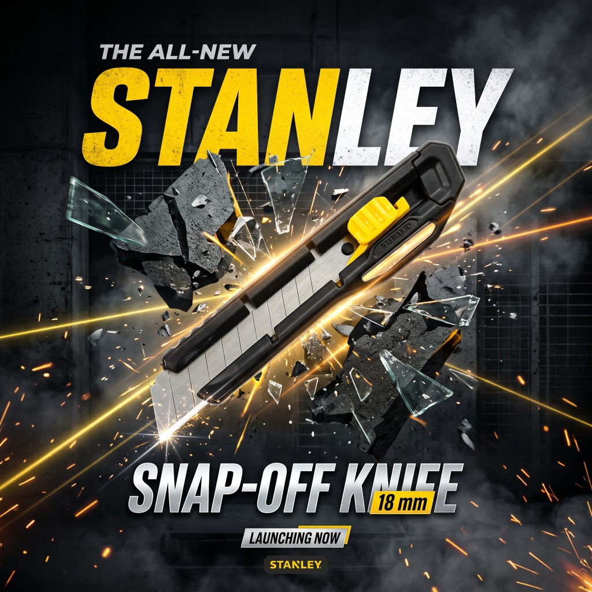
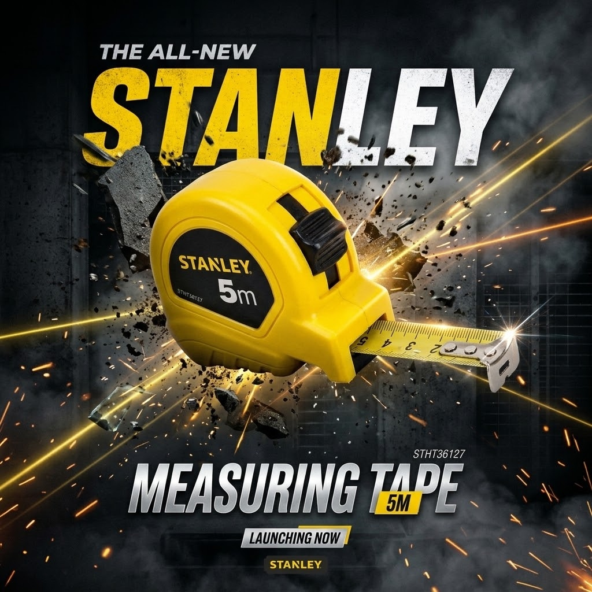

Strategic Addition to Aoura Catalog
DUBAI, United Arab Emirates — October 24, 2026 — In response to surging demand from construction contractors, fit-out specialists, logistics centers, and retail packaging facilities across the UAE, Aoura Products today announced the official rollout of its dedicated Stanley Professional Hand Tools Collection. By combining Stanley’s century-old legacy of industrial reliability with Aoura’s localized stocking and fast GCC distribution, the partnership establishes a dependable procurement channel for authentic contractor-grade tools.
The initial deployment focuses on the two most heavily consumed daily utility instruments across commercial sites: the Stanley 18mm Snap-Off Utility Knife with Auto-Lock and the Stanley 5-Meter Heavy-Duty Measuring Tape (STHT36127).

Stanley 18mm Auto-Lock Snap-Off Knife
Safety, edge retention, and ergonomic comfort are critical when processing thousands of cartons, shrink-wrap layers, rubber seals, and insulation materials daily. The 18mm Stanley Snap-Off Knife features key engineering highlights:
- Precision Auto-Lock Slider: Ensures positive blade positioning that withstands up to 15 kg of cutting force without unwanted slippage or blade retraction during heavy material slice-through.
- Multi-Segment Carbon Steel Blades: High-grade hardened steel delivers razor-sharp cuts across dense corrugated cardboard, strapping, plastic sheeting, and drywall paper. With quick blade segment snap-off, workers maintain a fresh cutting edge in seconds without tools.
- Impact-Resistant Ribbed Body: Textured ABS ergonomic casing resists shattering from accidental drops onto concrete workshop floors while ensuring a firm, non-slip grip even when wearing work gloves.
Stanley 5M Measuring Tape (STHT36127)
Precision measurement is the foundation of quality assurance across construction, interior joinery, and warehouse layout planning. The Stanley 5M (STHT36127) series sets the industry standard for daily durability:
- High-Contrast Imperial & Metric Scale: Crisp, anti-glare graduations printed on a polymer-coated blade that resists abrasion and corrosion in dusty, humid Gulf operating environments.
- Tru-Zero® Dynamic End Hook: Self-adjusting magnetic end-hook allows for exact inside and outside boundary measurements, eliminating dimensional errors.
- Heavy-Duty High-Impact Casing: High-visibility Stanley yellow shell with rubberized shock absorbers and a firm thumb lock that locks the blade securely at desired extensions.

Jobsite & Warehouse Applications
Both products address critical operational needs across commercial facilities in the UAE:
- Logistics & Packaging: Slitting pallet wrapping, trimming tape, unboxing raw inventory, and inspecting dimensional weights of export freight.
- Interior Fit-Out & Carpentry: Accurate framing measurement, gypsum board cutting, and architectural component staging.
- Manufacturing & Metal Fabrication: Sheet metal marking, protective film stripping, and assembly line quality control.
- Facility Maintenance (FM): Essential utility kit equipment for maintenance technicians managing commercial real estate across Dubai and Abu Dhabi.
Technical Specifications Comparison
| Parameter | Stanley 18mm Knife | Stanley 5M Tape Measure |
|---|---|---|
| Model / Reference | Stanley 18mm Auto-Lock | STHT36127 |
| Blade / Tape Width | 18 mm (8 Segments) | 19 mm Wide Blade |
| Reach / Length | Full Blade Extension ~100mm | 5 Meters (16.4 Feet) |
| Locking Mechanism | Positive Auto-Lock Slider | Top-Mounted Slide Lock Button |
| Casing Material | Heavy-Duty Polymer Composite | Bi-Material Impact ABS |
| Authenticity Guarantee | 100% Genuine Stanley Guaranteed | 100% Genuine Stanley Guaranteed |
UAE Commercial Supply & Availability
As with all hardware and industrial consumables in the Aoura portfolio, the Stanley hand tools line is held in substantial volume inside Aoura’s regional fulfillment hubs. Corporate procurement officers, facility management contractors, and retail re-sellers can order individually or in master-pack cartons directly through Aoura Products.
Same-day and next-day express logistics cover Dubai, Sharjah, Ajman, and Abu Dhabi, accompanied by VAT-compliant B2B invoicing and consolidated supply credit options for vetted commercial accounts.